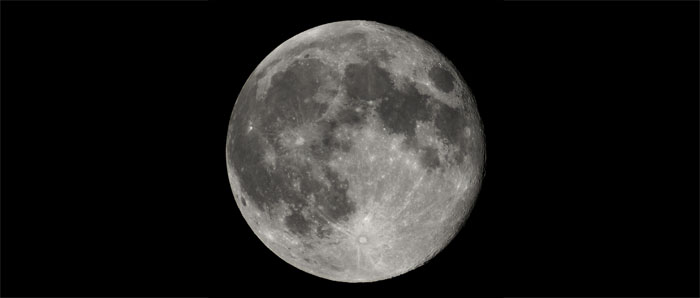

La Lune
La Lune est un satellite de la Terre. Elle boucle son orbite autour de notre planète en 27,3 jours. Comme elle effectue dans le même temps un tour complet sur elle-même, elle nous présente toujours la même face. Son orbite est excentrique, la distance Terre-Lune variant entre 356 410 km et 406 679 km.
La Lune ne brille pas de sa propre lumière ; elle ne fait que réfléchir la lumière du Soleil. Selon son orientation par rapport au Soleil au cours de sa révolution autour de la Terre, elle nous apparaït sous différentes perspectives, ou "phases". Quand elle se trouve entre le Soleil et là Terre, elle est à contre-jour et nous ne pouvons pas la voir : c'est la Nouvelle Lune. Poursuivant sa course orbitale, elle nous apparaît ensuite sous la forme d'un mince croissant
lumineux qui ne cesse de croître. Au Premier Quartier, le Soleil éclaire la moitié de la Lune ; elle a alors parcouru le quart de son orbite. Quand elle arrive à l'opposé du Soleil par rapport à la Terre, sa face est entièrement éclairée : c'est la Pleine Lune. Puis son disque est progressivement envahi par l'ombre jusqu'à ne plus former qu'un croissant effilé, le cycle étant ainsi bouclé.

Source : Wikipédia
La surface lunaire présente trois types de reliefs, tous visibles de la Terre , de vastes étendues planes d un gris sombre, appelées "mers", des régions élevées plus accidentées et une multitude de cratères C'est aux "mers" que la Lune doit son faciès caractéristique. Profondes dépressions comblées par des épanchements de lave à l'époque où la Lune était volcaniquement active, ces plaines quasiment lisses forment des taches sombres contrastant avec les régions environnantes. Les zones montagneuses couvrent presque entièrement la face cachée de la Lune et entourent les "mers" sur sa face visible. Ce sont les plus anciens éléments du relief lunaire. Ayant subi, depuis leur formation, un bombardement intensif de météores et poussières cosmiques, ces régions accidentées sont criblées de cratères, littéralement concassées en certains endroits, et sillonnées de failles. Elles renferment des sommets aussi élevés, sinon plus, que les Alpes. Si l'on tient compte de la différence de taille entre la Terre et la Lune, ces montagnes sont vraiment très élevées.
Source : Étoiles et planètes, Gründ, 1988
Plan du site | Contact | Site réalisé par Mathieu Morainville.